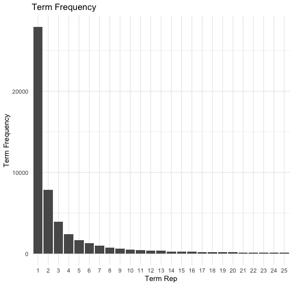
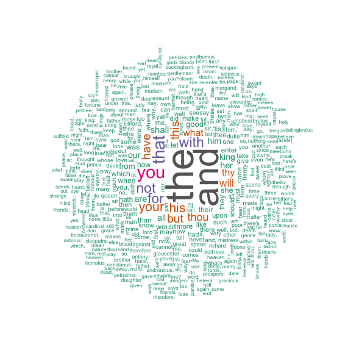
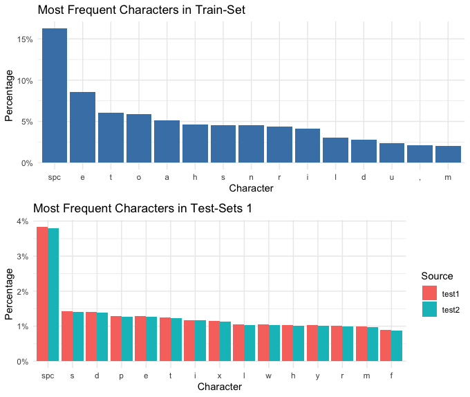
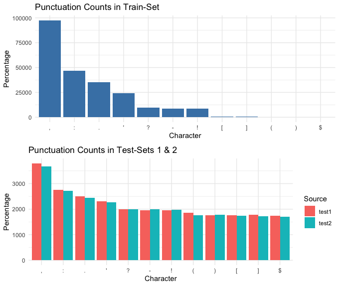
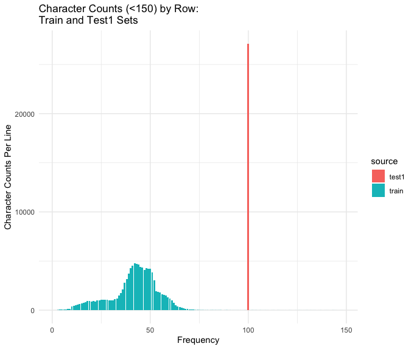
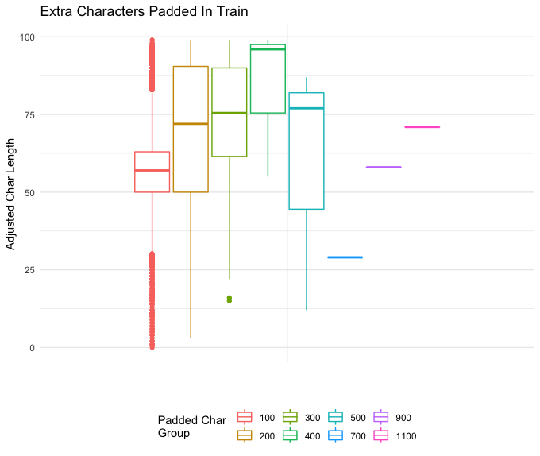

Data Overview
The Data:
The data sets that will be used are provided by Kaggle for the closed “Cipher Challenge III” competition. The challenge contained two data sets: a plain text training set and a ciphertext testing set. The plain text set included 108,755 lines of Shakespeare’s plays. The ciphertext set consisted of 108,755 corresponding lines; however, each line was encrypted with a possible, four layers, of known cipher techniques. For this project, I will focus only on the single-layered ciphertext (level 1) with a stretch goal of attempting an additional layer if the models proved to be successful.
These data sets were specifically chosen due to the Shakespearean plain text. Homomorphic encryption allows for the use of encrypted data without the need to unencrypt it, and Shakespeare’s Old English prose can be viewed as a type of encryption when compared to modern English (to a small degree). Therefore, the use of this text provides an “entry-level” step into machine learning using already encrypted data. Again, if successful, including the second later encrypted data could further show machine learning’s ability to recognize patterns in known data.
While the lines of Shakespeare text vary in length, the ciphertext contained alpha-numeric “padding” to increase each sentence/line length to the next 100 characters. This padding introduces a random element that I will need to account for.
The Cipher text Challenge III data can be found: https://www.kaggle.com/kaggleuser58/cipher-challenge-iii-level-1/data
Text Cleaning
Typically, several text “cleaning” techniques would be applied to the text prior to exploring to focus attention only on key elements. Cleaning would include the removal of punctuation, stop words, and capitalization (among other processes). However, since each character (including capitals, punctuation, etc.) may represent a crucial pattern in the encrypted text (e.g. an “a” may be translated to a “!”) no cleaning will be performed. Additionally, the removal of stop words (typically the most frequent) could reduce the size of potential patterns within the text data, complicating the training/prediction process.
Loading and Exploring the Data
Due to the “closed” status of the Kaggle Challenge and the possibility that the data would become unobtainable, copies of each data set was added to the Git Repository.
Loading the Libraries
Loading the Data
#Loading the Data
##Datasets have been copied to the website
train <- read.csv("https://raw.githubusercontent.com/ckornafel/cyphertext/master/ciphertext-challenge-iii/train.csv",
stringsAsFactors = FALSE)
test <- read.csv("https://github.com/ckornafel/cyphertext/raw/master/ciphertext-challenge-iii/test.csv",
stringsAsFactors = FALSE)Plain text Data set
I am expecting to see three columns: An ID, Plain text, and an Index Value
head(train[order(train$index),],5)## plaintext_id text index
## 15647 ID_ee32b1f8b So shaken as we are, so wan with care, 0
## 1415 ID_44eedb7fc Find we a time for frighted peace to pant, 1
## 47302 ID_d897c21b7 And breathe short-winded accents of new broils 2
## 79236 ID_808ab9107 KING HENRY IV: To be commenced in strands afar remote. 3
## 42715 ID_e4f11a02d No more the thirsty entrance of this soil 4As expected, the training data set contains three columns, the plain text id, the Shakespearean plain text, and the index key. The plain text sample shows that each line/row of text could be partial examples of play lines, including randomly included titles. It does appear that some of the text can be grouped by certain whole Shakespearean works (King Henry) and broken out by scene line. Since the first part of King Henry IV contains 33 lines, I wanted to know what the next block of text might include.
train[which(train$index > 33 & train$index < 39),]## plaintext_id text
## 11616 ID_4228ba5f9 WESTMORELAND: A post from Wales loaden with heavy news,
## 32606 ID_0ea0e4451 And many limits of the charge set down
## 34473 ID_2465ca5d4 WESTMORELAND: But yesternight: when all athwart there came
## 54787 ID_3cb55c6f4 Leading the men of Herefordshire to fight
## 103586 ID_53eaea329 Whose worst was, that the noble Mortimer,
## index
## 11616 36
## 32606 34
## 34473 35
## 54787 38
## 103586 37Westmoreland is the next section of King Henry IV after King Henry’s part (scene I) - it appears that the plain text is organized as multiple plays and each line represents one line of plain text.
length(unique(train$text))## [1] 108755108755 unique lines of text matches that total number of rows in the training data set. Therefore, it signifies that there are no repeated lines which could complicate dicphering the cyphertext, given that there are multiple ciphers applied to the entire set.
Cipher text
str(test)## 'data.frame': 108755 obs. of 3 variables:
## $ ciphertext_id: chr "ID_4a6fc1ea9" "ID_9460d3380" "ID_ac39fd360" "ID_d089e3234" ...
## $ ciphertext : chr "H2-t.'HzW$QOSvkPw v)4I1iSECKPX: P ktxjkp qemfl, eq pvt sssid elede btqp sbcly)hVJ9M41hVpx4fKh!vG)-Fh" "Ah1QtVkLNcx7Q6mgvleEAqFIzyZoYkVtiKnd2Yy2t2GmoT4FkAHmS4YCE8n6IRobTMyu6PnCY919kB/UtA0/gg9qYQtIZxM9z/bKvA213y1/Ebe"| __truncated__ "BxBYt00fPc5zQqmls1mAFrVIzihsdFdoiKjdzZ22tWOnoTwGkRnkXIILBs74MxESXsy26vvbY9drlBnNsQgtgAp+Zg9fahMvy/TavQikyyB7HLm"| __truncated__ "AxFVtU0YMcl6R6mlvFKNFbVNziNpYkNtjKLX2Y+wsWShoTkDkRXhXIEDBsz/MxsXWMCv/v/Xa9Z+hxnBsQY6kg18ZAtKfhQuyPbLqwel0y1sG7+"| __truncated__ ...
## $ difficulty : int 1 4 4 4 3 1 2 3 4 3 ...The test (cyphertext) data set also contains three variables: ciphertext id, ciphertext, and difficulty. The difficulty value indicates the number of ciphers used on the plain text. E.g. level one indicates that a single cipher was applied, level two indicates that an additional cipher was applied to the first ciphertext, etc.
Splitting the Test Data set into Four Levels
test1<- test[test$difficulty==1,]
test2<- test[test$difficulty==2,]
test3<- test[test$difficulty==3,]
test4<- test[test$difficulty==4,]
rm(test) #Conserving memory
head(test1$ciphertext) #Viewing the Level 1 CipherText## [1] "H2-t.'HzW$QOSvkPw v)4I1iSECKPX: P ktxjkp qemfl, eq pvt sssid elede btqp sbcly)hVJ9M41hVpx4fKh!vG)-Fh"
## [2] "Pv4n2iv9M[[I39w5dBz'YURX-R-CIopea, adeld Sirsav: md lvt lggw cppxfsxtc.83 !NWeC xTrHd,7X:X)937$zf,(P"
## [3] "0W,jz:pH(z9xIENX5o[VM,!zma)]P5M rydi dnf bwhfltq, qsh H miv ma jpuayh,,(Fb0gO5T]q.q4T3bt$5aJK1$)plKq"
## [4] "bN0pTfe9HBIzGH[uU$g?hBd.kmIW7j.qXe kld prtht ktjt-glvchyk wdlaxmpwi-ogKAan17gjP.QJd[w1- rui]xICalV9v"
## [5] "CPuqjMj5$tOcHNthUki.'9LMNaAOErbptj ssmi rnvekw, qerf khynmete weupvthrr,rMJjGs$XVstbh 7,JRf)M9cI3Ix["
## [6] "j-?xWsIxuFxx1bgN,,:,VlU[-w'F,LM[)nxyX]X baybc iibk qshapeh's.i-:XI 7Q11to$GvVMvbYPb0rF,M1V3wwzFi-G5J"Terms/Words
Both data sets contained lines of text (sentences) which could be broken down into smaller text-items. For the next part, I will be focusing on the words/terms which comprise each of the text lines. Perhaps there may be some pattern that I can use to create numeric vectors for the machine learning algorithms.

It appears that there are only a small subset of terms (approx 7) which appear with high frequency. One term appears over 25,000 times but the next most frequent term drops to below 10,000 occurrences in the complete Shakespearean text. There are 27937 terms that appear only once in the Shakespeare text. This highlights that slightly more than half (51.33%) of the entire set of terms are unique combinations of letters/punctuation.
Most Frequent Terms in the Train (Plain text) Set
 The most frequent Shakespeare terms are similar to those found in modern English (e.g. and, the, not, etc.). Normally, in text mining exercises, these common (stop) words would be removed in order to focus on the more impactful words in the corpus. However, since I am working with cyphertext every word (and punctuation) could be represented in the ciphertext and therefore needs to remain in the plain text.
Most Frequent Terms in the Test (Cipher text) Set
 The most frequent terms in the test1 data set appear to be similar in length (short) to the plain text frequent words. Although, there seem to a few words (e.g. xwd, ssiflt) that have much more frequency. This is because the training set is only a quarter of the size of the training set. There are no terms in test 3 which appear only once. The lowest frequency of occurrence are two terms which appear twice and three times in the cipher text. Given the large volume of individual number combinations, it may indicate that they represent letter pairs or phonetic sounds instead of whole terms.
The most frequent terms in the test1 data set appear to be similar in length (short) to the plain text frequent words. Although, there seem to a few words (e.g. xwd, ssiflt) that have much more frequency. This is because the training set is only a quarter of the size of the training set. There are no terms in test 3 which appear only once. The lowest frequency of occurrence are two terms which appear twice and three times in the cipher text. Given the large volume of individual number combinations, it may indicate that they represent letter pairs or phonetic sounds instead of whole terms.
Comparing Word Frequency between Train and Test
WordCount <- function(x){
return(length(unlist(strsplit(as.character(x), "\\W+"))))
}
train$num_term<-sapply(train$text, WordCount)
table(train$num_term)##
## 1 2 3 4 5 6 7 8 9 10 11 12 13
## 416 2233 3441 5308 5936 7881 12344 18744 21049 16569 8924 3991 1303
## 14 15 16 17 18 19 20 21 22 23 24 25 26
## 349 92 32 24 17 6 11 7 4 7 9 5 7
## 27 28 29 30 31 32 33 34 35 36 40 43 47
## 4 3 3 5 4 1 2 3 5 2 1 1 1
## 48 49 52 56 57 67 68 76 123 147 168
## 1 1 1 1 1 1 1 1 1 1 1test1$num_term<-sapply(test1$ciphertext, WordCount)
table(test1$num_term)##
## 7 8 9 10 11 12 13 14 15 16 17 18 19 20 21 22
## 2 15 29 105 269 613 1200 2169 3295 4037 4466 3969 3009 1999 1126 516
## 23 24 25 26 27 28 29 30 31 32 33 34 35 44 45 47
## 185 79 27 9 5 1 5 4 5 4 2 1 2 2 1 1
## 49 50 51 61 76
## 1 2 1 1 1It does not appear that the count of terms for each section of Shakespeare Text correlates well with the count of terms from each of the cipher texts. Those term counts that do align (e.g. one instance of a 49-term length Shakespeare text) also appear in multiple cipher texts (e.g one instance of a 49-term Test 1 text and one instance of a 49-term Test 2 text). Given the assumption that there is no overlap of cipher to plain texts, it would appear that spaces may not term separators in the cipher texts.
Additionally, there are 416 instances of a single-term Shakespeare text but the smallest number of cipher text terms is seven in both test1 and test2 sets. Either these single-term texts are hidden in test3 and test4, or another indication that spaces are not term separators in the cipher texts.
Groups of Terms
term_freq <- train %>%
group_by(num_term) %>%
summarise(counts = n())
ggplot(head(term_freq,20), aes(x=num_term, y = counts ))+
geom_bar(fill = "steelblue", stat = "identity")+
theme_minimal() It looks like the training set is mainly comprised of short (<15) worded terms. However, given that this set represents all four cipher levels and we are only focusing on one, the actual distribution of the reduced set may be smaller.
It looks like the training set is mainly comprised of short (<15) worded terms. However, given that this set represents all four cipher levels and we are only focusing on one, the actual distribution of the reduced set may be smaller.
Characters
While the above section explored the individual words/terms within each line of text. This next section will dive into the individual characters which make-up those words/terms.
A quick check to verify that the same characters are used for train and test1
all_text_train <- paste(train$text, collapse= "")
all_text_test1 <- paste(test1$ciphertext, collapse = "")
uniq_chr_train <-as.vector(unique(strsplit(all_text_train, "")[[1]]))
uniq_chr_test1 <-as.vector(unique(strsplit(all_text_test1, "")[[1]]))
sort(uniq_chr_train) == sort(uniq_chr_train)## [1] TRUE TRUE TRUE TRUE TRUE TRUE TRUE TRUE TRUE TRUE TRUE TRUE TRUE TRUE TRUE
## [16] TRUE TRUE TRUE TRUE TRUE TRUE TRUE TRUE TRUE TRUE TRUE TRUE TRUE TRUE TRUE
## [31] TRUE TRUE TRUE TRUE TRUE TRUE TRUE TRUE TRUE TRUE TRUE TRUE TRUE TRUE TRUE
## [46] TRUE TRUE TRUE TRUE TRUE TRUE TRUE TRUE TRUE TRUE TRUE TRUE TRUE TRUE TRUE
## [61] TRUE TRUE TRUE TRUE TRUE TRUE TRUE TRUE TRUE TRUE TRUE TRUE TRUE TRUEsort(uniq_chr_train) == sort(uniq_chr_test1)## [1] TRUE TRUE TRUE TRUE TRUE TRUE TRUE TRUE TRUE TRUE TRUE TRUE TRUE TRUE TRUE
## [16] TRUE TRUE TRUE TRUE TRUE TRUE TRUE TRUE TRUE TRUE TRUE TRUE TRUE TRUE TRUE
## [31] TRUE TRUE TRUE TRUE TRUE TRUE TRUE TRUE TRUE TRUE TRUE TRUE TRUE TRUE TRUE
## [46] TRUE TRUE TRUE TRUE TRUE TRUE TRUE TRUE TRUE TRUE TRUE TRUE TRUE TRUE TRUE
## [61] TRUE TRUE TRUE TRUE TRUE TRUE TRUE TRUE TRUE TRUE TRUE TRUE TRUE TRUEIt is known that the plain text and ciphertext did not contain any unique characters and were comprised of alpha letters (upper/lower case), punctuation, and spaces. This confirms that the two data sets did not include characters that were not also used in the other. Hopefully this will make it easier for the machine learning models to identify patterns.

The comparison of the characters highlights a potential substitution cipher being used. I’ve included the second layered ciphertext set for comparison. According to this chart, it could be assumed that the space character is not changed when encrypted. This means that individual words have the same separator (space) after encryption. Additionally, this plot could identify that all plain text e’s are exchanged for ciphertext s’s. Another possible assumption could be made between the level 1 and 2 encryption since the character frequencies are so similar. This could indicate that they are similar cipher techniques but with different rotating letters. It is also noted that punctuation does not appear in the ciphertext frequencies, this could indicate that punctuation marks are not used as substitutions for alpha letters.
Exploring the punctuation assumption further
The above plot highlights a unique pattern within the ciphertext that indicates that punctuation is not encrypted. 
Given the order of frequencies for each punctuation character, it does appear that punctuation remains the same between test and train.
Examining Character Counts by Line

The above plot shows that the majority of the training (plain text) data falls below 100 characters. This indicates that the majority of the corresponding ciphertext includes over 50 additional (random) characters as “padding”. These extra characters will provide a challenge for the ML models as it introduces randomness in any potential pattern for the largest portion of the data set. However, having few examples of longer character lines could help identify the padding scheme which could then be removed (and reduce the randomness).

The box plot for the padded character amounts show that the majority of the padding occurs within the 0 - 100 character rows. This group (100) has an average of approx. 60 additional characters added to the Shakespeare text. However, it also has a range of up to 99 additional characters - having the largest spread of padding. The 700, 900, and 1100 (largest) groups have the fewest members and consist of approx 27, 60, and 72 (respectively) additional characters. I assume that the low number of these larger text blocks will compensate for the additional characters when predicting the plain text. The above plot also indicates a large amount of outlying padding characters for the 100-char population. This could highlight a potential issue with the random-factor for the largest group and obscure predictive patterns.